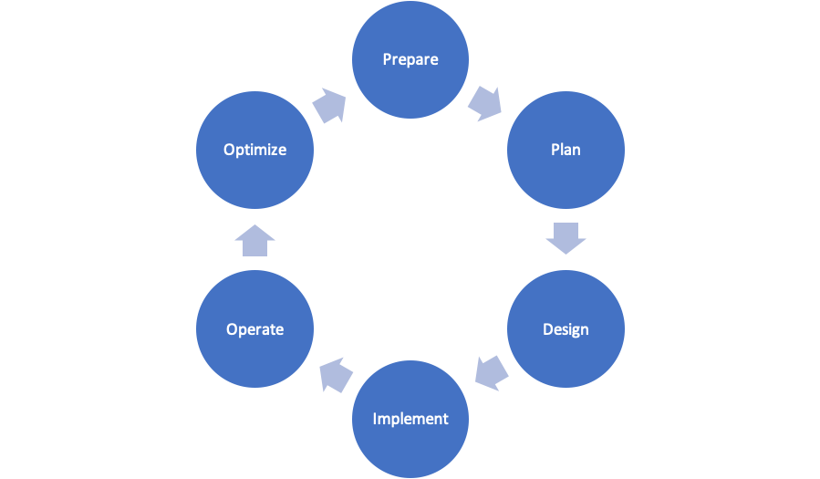

Network Design and Documentation¶
Planning: It’s Who You Are¶
Planning as a personality characteristic
Find a template that works for you
CISCO Network Lifecycle (PPDIOO)
Microsoft Project / Excel Template
IT Infrastructure Library (ITIL)
Create the implementation plan
Follow the implementation plan
Planning: What’s Included?¶
Phase 1: Necessary Information/Data
Accurate network diagram
Equipment list
IP address diagram/spreadsheet
Link utilization
Configuration commands
Timeline
Hardware required
Relevant contact information
Phase 2: Implementation Plan
Identify devices and tasks (checklist)
List necessary software version
List configurations
Verification and testing
Phase 3: Documentation
Network diagram/information
network equipment
Current configurations
Known issues
Network performance baseline
Verification commands and results
Monitoring and management utilities
Photographs and screen-dumps
Documentation should be what you are!
Documentation is like a deprecating asset!